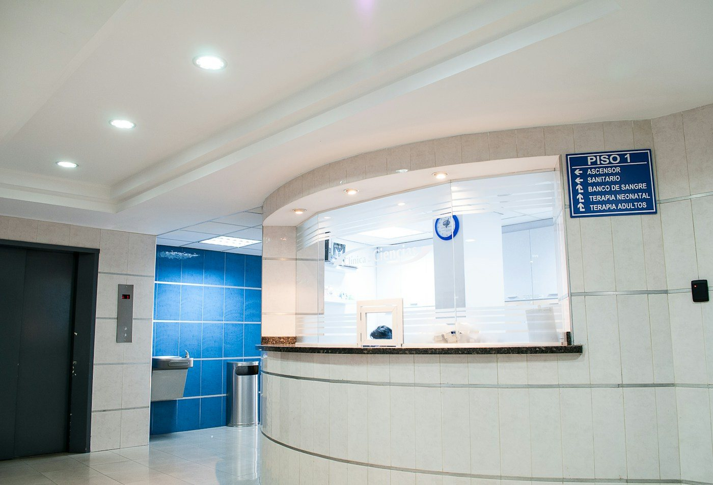

38% Faster IPD Discharge
Parallel discharge clearance triggers pharmacy returns, nursing summary sign-off, and final TPA billing simultaneously instead of sequentially.
MediCore HMS connects outpatient queues, inpatient nursing stations, LIS/RIS diagnostics, central pharmacy, and cashless TPA insurance desks into one unified clinical command center.

Replace fragmented legacy software and paper clipboards with a single real-time hospital operating system engineered for clinical accuracy and revenue integrity.
Parallel discharge clearance triggers pharmacy returns, nursing summary sign-off, and final TPA billing simultaneously instead of sequentially.
Every cath-lab stent, ICU infusion vial, and bedside procedure auto-posts to the patient folio the moment it is scanned at the point of care.
Instant color-coded visibility across ICU, NICU, Private Suites, and Emergency bays—tracking occupied, reserved, and UV-sanitization turnaround states.
Structured ICD-11 & SNOMED-CT clinical templates, voice-assisted SOAP notes, MAR charts, and drug-allergy interaction checks on any tablet.
AI-assisted shift scheduling enforces NABH nurse-to-bed ratios, prevents back-to-back fatigue conflicts, and automates on-call specialist escalation.
AES-256 encryption at rest, immutable HIPAA audit logs for every chart view, biometric 2FA, and granular role-based access control across branches.
Follow a single patient UHID from morning arrival to final cashless discharge without a single duplicate data entry or phone call between departments.
Scan ABHA / National Health ID or QR kiosk check-in. UHID wristband prints automatically and assigns an available ward bed or OPD token.
Consultants review vitals history and order labs, radiology scans, and e-prescriptions in 3 clicks with automatic drug-interaction screening.
Barcoded vacutainers route directly to Roche/Abbott LIS analyzers. Panic values trigger instant SMS and ICU nursing station alerts.
E-prescriptions appear live at the pharmacy counter with First-Expiry-First-Out batch picking and automatic barcode MAR administration logs.
Pre-authorization enhancements, diagnostic reports, and ICD codes bundle into NHCX/TPA-compliant claim packets with zero manual stitching.
Digital discharge summary dispatches to the patient's WhatsApp/Portal while housekeeping receives an automatic UV terminal-cleaning alert.
Reduction in average wait time from doctor discharge order to physical bed release.
Cashless insurance pre-authorizations cleared without insurer document queries.
Multi-zone cloud architecture with offline local-LAN resilience for critical wards.
Annual OPD, IPD, and emergency episodes processed securely across partner hospitals.
Switch roles below to see how MediCore HMS eliminates daily friction for leadership, clinicians, nursing stations, billing teams, and IT.
Track department-wise ARPOB (Average Revenue Per Occupied Bed), ALOS, OT utilization, and consultant payouts in real time.
Auto-generate 68 mandatory NABH quality indicator reports—including CAUTI, CLABSI, medication errors, and needle-stick logs.
Standardize tariff masters, pharmacy formularies, and vendor procurement contracts across 1 to 50 hospital branches.
Pre-built cardiology, orthopedics, OB-GYN, and pediatrics flowsheets let doctors complete OPD notes before the patient leaves the cabin.
Inspect CT, MRI, and digital X-ray DICOM slices side-by-side with serial lab trend graphs directly inside the browser chart.
Review morning IPD vitals, approve STAT verbal orders, and co-sign surgical discharge summaries from any smartphone or iPad.
Scan patient wristband and unit-dose medication pouch to verify the 5 Rights of Medication Administration with zero transcription error.
Digital Situation-Background-Assessment-Recommendation sheets compile automatically at shift change so critical tasks never drop.
Bedside vitals auto-calculate Modified Early Warning Scores (MEWS) to flag sepsis or respiratory deterioration hours earlier.
Automatically apply insurer-specific room rent caps, surgical package inclusions, and implant ceiling rates without manual lookup tables.
Monitor Pre-Auth Submitted, Query Raised, Enhancement Pending, and Final Settlement states across 45+ TPAs on one board.
Instantly split non-payable consumables onto the patient co-pay invoice while routing covered items to the corporate TPA ledger.
Plug-and-play MLLP listeners and REST webhooks connect existing LIS analyzers, PACS modalities, and SAP/Tally ERPs in days.
No thick-client .NET installers or legacy Windows Server patching. Runs on any Chrome/Edge workstation with offline edge caching.
Integrate with Azure AD / Okta and stream tamper-proof access logs directly to your hospital SIEM for HIPAA compliance.
“Before MediCore HMS, our 650-bed tertiary hospital averaged 3.5 hours for an IPD cashless discharge. Within 60 days of go-live, our discharge turnaround dropped to 41 minutes and unbilled ICU consumables fell to zero.”
Medical Director · Apex Metro Multi-Specialty Hospital (650 Beds)
Our clinical implementation architects will configure a custom sandbox with your bed count, specialty departments, and TPA tariff structure.